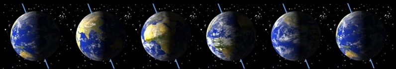

A day is the length of time it takes a planet, satellite or other celestial body to complete one rotation on its axis. However, this rotation can be measured with respect to the location of the Sun (from noon to noon is a solar day), or the stars (a sidereal day).

A sequence of images showing the daily rotation of the Earth. The rotation axis is shown as the pale blue line that passes through the north and south poles of the Earth.
Within the Solar System, the approximate length of day on each planet (measured relative to an Earth day of 24 hours) is:
| Planet | Mercury | Venus | Earth | Mars | Jupiter | Saturn | Uranus | Neptune | Pluto |
| Day | 58.6 | 243 | 1 | 1.03 | 0.41 | 0.43 | 0.72 | 0.67 | 6.44 |
On Earth there are 24 hours in a day, which is 1440 minutes, or 86400 seconds.